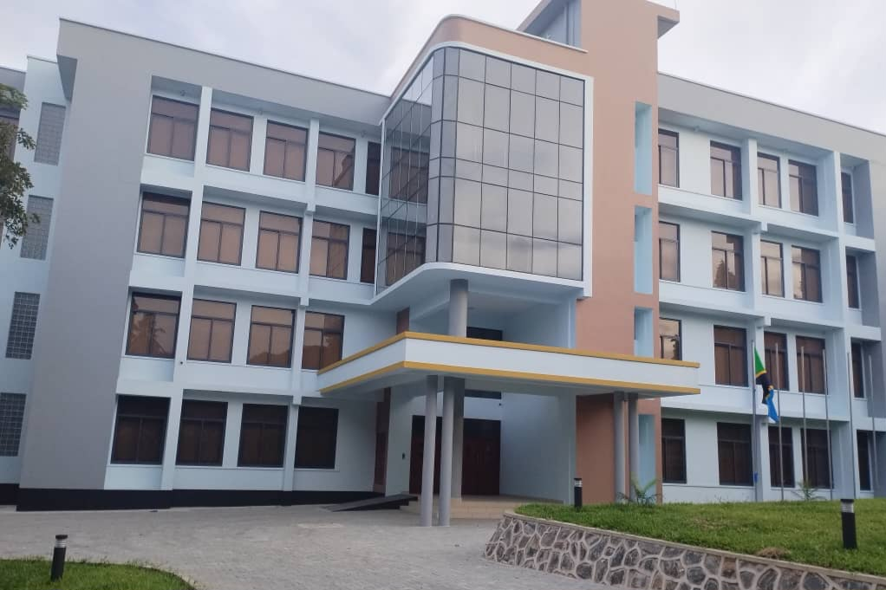
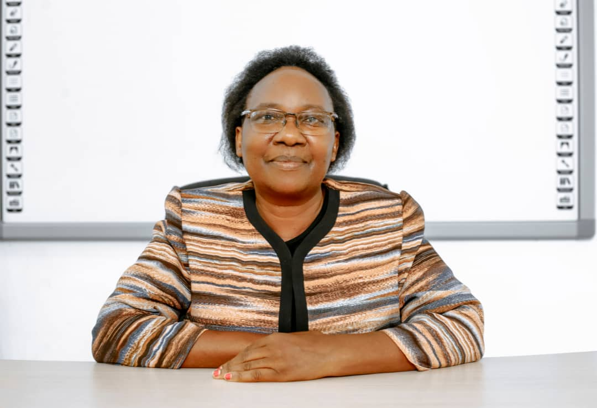

EASTC CONVOCATION CEREMONY
Plan with figures

Convocation Time Table
| TIME | ACTIVITY | RESPONSIBLE |
|---|---|---|
| 8:30 - 9:30 | REGISTRATION | ALL, SECRETARIAT |
| 9:30 - 9:35 | Presenting the programme | M.C. |
| 9:35 - 9:45 | Introduction of Guests and welcoming remarks | President Of The Convocation |
| 9:45 - 10:00 | Opening Remarks, Constituting the Convocation and Preamble to the award presentation | Rector |
| 10:00 - 10:20 | Awarding prizes to the best students | Rector, Guests of honor |
| 10:20 - 10:40 | Certificate of merits to EASTCSO leaders | Rector, Guests of honor |
| 10:40 - 11:20 | Key note address | Guests of honor (ESRF) |
| 11:20 - 11:35 | 1st EXperience Sharing | Presentter(Aluni-OCSG) |
| 11:35 - 11:45 | 2nd Experience Sharing | Presentter(Aluni-IFI) |
| 11:45 - 12:00 | rdpresentation | Lecturer (female- Rectors award reseaarch and publication) |
| 12:00 - 12:15 | 4th Presentation | Lecturer (male- Rectors award reseaarch and publication) |
| 12:15 - 12:20 | Experience of african statistical day | participant (Mr. JOHN BEHISTA) |
| 12:20 - 13:40 | discussion | All,MC |
| 13:40 - 13:45 | Vote of thanks | Rector |
| 13:45 | Departure | Guests of honor & Rector |
| 13:45 - 14:00 | Group PPhoto | M.C |
| 14:00 - 15:00 | annual general meeting | President of the convocation, secretary, EASTC students and aluni |
| 15:0 - 15:05 | Vote of thanks and closing | President of the convocation |
Opening of the Convocation
The convocation was officially opened by the Rector. The Rector emphasized the importance of academic excellence and the role of education in shaping the future.

Presentations from Stakeholders


PRESIDENT AND HOST OF THE CONVOCATION

Name: Ms. Nyambilila Minga
Position: President of Convocation
Phone: +255712345678
E-mail: nyambililaminga@gmail.com
Closing the Convocation
The convocation was officially closed by the President of the Convocation, who congratulated all the graduates and encouraged them to strive for excellence in their future endeavors.